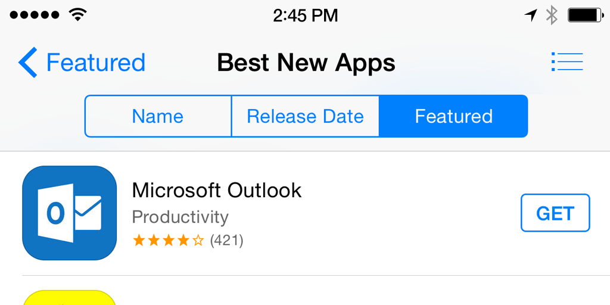

To those who don’t know, Microsoft launched several months ago Outlook for Android and iOS phones and tablets. Microsoft’s new brand of Outlook have replace the failing “Outlook-branded apps” that are only available to the current subscribers of Office 365. The upheaval comes after Microsoft acquired San Francisco-based company, Acompli.com.

Acompli is an “advanced email application that empowers professionals to do more with emails, full calendaring, easy file sharing and log all the important people in one email format.” The format supports Microsoft’s Office 365, Gmail and Google Apps.
Microsoft’s plan is for both the Accompli and the new Outlook app to replace the rather dated Outlook-branded apps. The newfangled Outlook app is primarily based on the technology from the Acompli app that the company acquired for $200 million. Microsoft stated that it was a major factor in buying the app, as its staff could then make up the core group of engineers needed to drive the new Outlook app forward.
It’s no surprise that Microsoft is shifting its focus from PC-installed base as GeekWire.com reports that a study showed Americans spend approximately 162 minutes a day on their phones browsing. And with Gaming Realms, the developer behind the entertainment medium PocketFruity.com, claiming that the global smartphone use has now reached 17%, apps are seeing a spike regarding financial investments and support.
It will be interesting to see how well the new Outlook app is received after a year or so. With the app retaining many of the features that its recent acquisition Acompli successfully exhibited, there’s a possibility that the consumer base may just stay with the Acompli until Outlook perfects the new app further, and add features that will set it apart from other leading email applications.